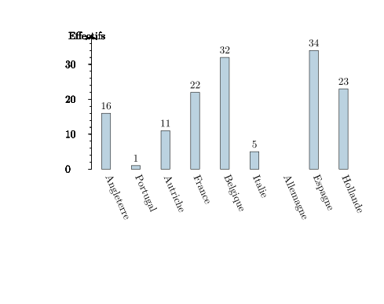
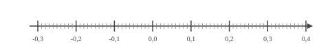
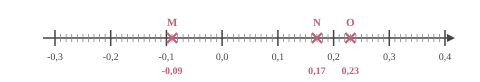
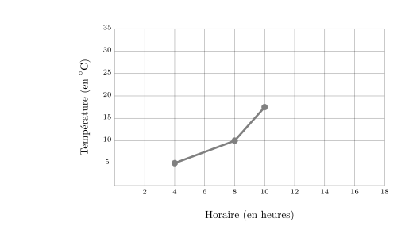
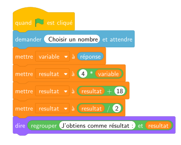

$7y-11=-9y-1$ On ajoute $9y$ aux deux membres. $7y-11{\color{#C5607A}\boldsymbol{\,\,+\,\,9y}}=-9y-1{\color{#C5607A}\boldsymbol{\,\,+\,\,9y}}$ $16y-11=-1$ On ajoute $11$ aux deux membres. $16y-11{\color{#C5607A}\boldsymbol{\,\,+\,\,11}}=-1{\color{#C5607A}\boldsymbol{\,\,+\,\,11}}$ $16y=10$ On divise les deux membres par $16$. $16y{\color{#C5607A}\boldsymbol{\,\div\,16}}=10{\color{#C5607A}\boldsymbol{\,\div\,16}}$ $y=\dfrac{10}{16}$ $y=\dfrac{5}{8}$ La solution de l'équation $7y-11=-9y-1$ est ${\color{#8B3C52}\boldsymbol{\dfrac{5}{8}}}$.
03
Question
Les angles $\widehat{xOy}$ et $\widehat{yOz}$ sont adjacents.
L'angle $\widehat{xOy}$ mesure $44^\circ$.
Combien mesure l'angle $\widehat{yOz}$ s'ils sont complémentaires l'un de l'autre ?
Deux angles adjacents complémentaires sont deux angles dont les côtés non communs forment un angle droit.
Alors $\widehat{yOz}=90^\circ-44^\circ={\color{#8B3C52}\boldsymbol{46^\circ}}$.
04
Question
Dans un salon européen de esport comptant 150 visiteurs, on a noté leur pays d'origine. On a représenté ces données à l'aide du diagramme ci-dessous. a. Déterminer l'effectif manquant. b. Déterminer les fréquences pour chaque pays d'origine (en pourcentage, arrondir au dixième si besoin).

a. L'effectif manquant est celui du allemagne. Soit $e$ cet effectif. $e=150-( 16 + 1 + 11 + 22 + 32 + 5 + 34 + 23 )$ $e=150-144$ $e={\color{#8B3C52}\boldsymbol{6}}$ b. Calculs des fréquences. On rappelle que pour la fréquence relative à une valeur est donnée par le quotient : $\dfrac{\text{effectif de la valeur}}{\text{effectif total}}$
On en déduit donc les calculs suivants :
$$
\begin{array}{|c|c|c|c|c|c|c|c|c|c|}
\hline
& \text{Angleterre} & \text{Portugal} & \text{Autriche} & \text{France} & \text{Belgique} & \text{Italie} & \text{Allemagne} & \text{Espagne} & \text{Hollande}\\
\hline
\mathbf{Fréquences} & \dfrac{16}{150} & \dfrac{1}{150} & \dfrac{11}{150} & \dfrac{22}{150} & \dfrac{32}{150} & \dfrac{5}{150} & \dfrac{6}{150} & \dfrac{34}{150} & \dfrac{23}{150}\\
\hline
\mathbf{Fréquences en pourcentages} & {\color{#8B3C52}\boldsymbol{10{,}7 \,\%}} & {\color{#8B3C52}\boldsymbol{0{,}7 \,\%}} & {\color{#8B3C52}\boldsymbol{7{,}3 \,\%}} & {\color{#8B3C52}\boldsymbol{14{,}7 \,\%}} & {\color{#8B3C52}\boldsymbol{21{,}3 \,\%}} & {\color{#8B3C52}\boldsymbol{3{,}3 \,\%}} & {\color{#8B3C52}\boldsymbol{4 \,\%}} & {\color{#8B3C52}\boldsymbol{22{,}7 \,\%}} & {\color{#8B3C52}\boldsymbol{15{,}3 \,\%}}\\
\hline
\end{array}
$$
01
Question
Dans une ville, $25\%$ des 10000 habitants participent à une campagne de vaccination.
Combien d'habitants ne participent pas à cette campagne ?
Le nombre d'habitants participant à cette campagne est égal à :
$10\,000 \times \dfrac{25}{100} = 2\,500$.
Le nombre d'habitants ne participant pas à cette campagne est donc égal à :
$10\,000 - 2\,500 = {\color{#8B3C52}\boldsymbol{7\,500}}$.
Une autre méthode consiste à calculer le pourcentage d'habitants ne participant pas à cette campagne, qui est égal à $100\% - 25\% = 75\%$.
Le nombre d'habitants ne participant pas à cette campagne est donc égal à :
$10\,000 \times \dfrac{75}{100} = {\color{#8B3C52}\boldsymbol{7\,500}}$.
02
Question
Placer les points : $M(-0{,}09), N(0{,}17), O(0{,}23)$.


03
Question
Calculer le périmètre exact des figures suivantes. Cercle de diamètre $9\text{ cm}$
$\mathcal{P}_\text{cercle} = d \times \pi$ $\mathcal{P}_\text{cercle} = {\color{#8B3C52}\boldsymbol{9\pi}}\text{ cm}$
04
Question
Le graphique ci-dessous donne l’évolution de la température (en degrés Celsius) en
fonction de l’horaire (en heures).
Entre $4$h et $10$h, de combien de degrés la température a-t-elle augmenté ?

D’après le graphique, à $4$h, la température est de $5$$^\circ$ C et à $10$h, elle est de $17{,}5$$^\circ$ C.
L’augmentation de la température entre $4$h et $10$h est donc de : $17{,}5-5={\color{#8B3C52}\boldsymbol{12{,}5}}$$^\circ$ C.
01
Question
Donner l'écriture scientifique de $-8\,800$$\,=$$\,\dots$
Nathalie doit acheter du carrelage. Sur la notice, il est indiqué de prévoir $25$ carreaux pour $2\text{ m}^2$. Combien doit-elle en acheter pour une surface de $1{,}5\text{ m}^2$ ?
Commençons par trouver combien de carreaux il faut prévoir pour $1\text{ m}^2$.
$1\text{ m}^2$, c'est ${\color{#C5607A}\boldsymbol{2}}$ fois moins que 2$\text{ m}^2$. $25$ carreaux $\div {\color{#C5607A}\boldsymbol{2}} = 12{,}5$ carreaux on a donc besoin de ${\color{#C5607A}\boldsymbol{12{,}5}}$ carreaux pour recouvrir $1\text{ m}^2$. Cherchons maintenant la quantité de carreaux nécessaire pour recouvrir $1{,}5\text{ m}^2$. $1{,}5\text{ m}^2$, c'est ${\color{#C5607A}\boldsymbol{1{,}5}}$ fois plus que $1\text{ m}^2$. ${\color{#C5607A}\boldsymbol{12{,}5}}$ carreaux $\times {\color{#C5607A}\boldsymbol{1{,}5}} = 18{,}75$ carreaux Nathalie aura besoin de ${\color{#8B3C52}\boldsymbol{18{,}75}}$ carreaux pour recouvrir $1{,}5\text{ m}^2$.
03
Question
Calculer le volume, arrondi au $\text{ dm}^3$ près, d'une boule de $3\text{ dm}$ de rayon.
On considère l’algorithme suivant :
Qu’obtient‑on si on choisit $1$ comme nombre de départ ?

Si on choisit $1$ comme nombre de départ, alors variable prend la valeur $1$.
Ensuite, resultat prend la valeur $4 \times 1 = 4$.
Puis, resultat prend la valeur $4 + 18 = 22$.
Enfin, resultat prend la valeur $\dfrac{22}{2} = 11$.
Résultat final : ${\color{#8B3C52}\mathbf{11}}$.